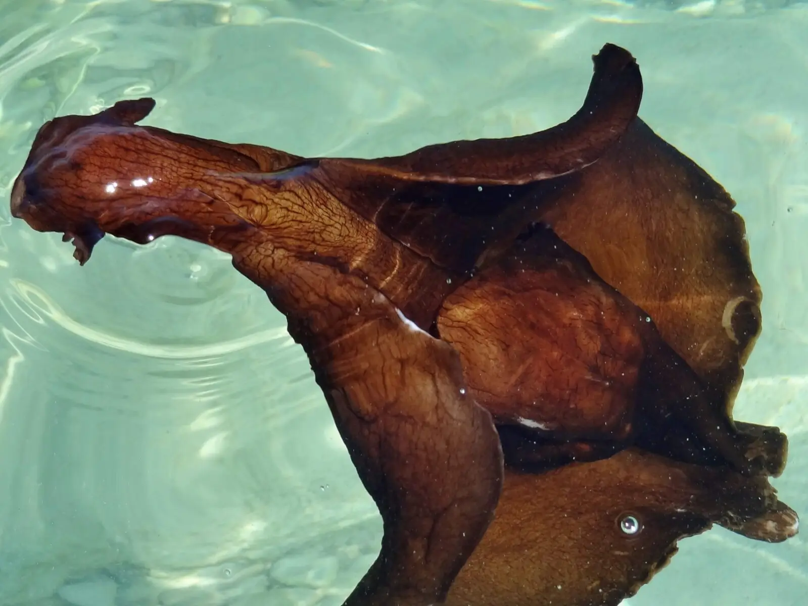

Animais marinhos diferentes
by Bianca

A vinagreira-negra (também chamada de lebre-do-mar-negra) é um molusco marinho do gênero Aplysia, geralmente da espécie Aplysia fasciata. Embora pareça uma lesma gigante, ela possui uma pequena concha interna protegida por seu manto.
é um molusco marinho gasterópode sem concha, comum em águas rasas e costeiras. Apesar de parecer exótica, é inofensiva, move-se lentamente e alimenta-se de algas, podendo liberar uma tinta roxa como mecanismo de defesa.

A criatura na imagem é um nudibrânquio (Goniobranchus geminus ou uma espécie muito semelhante), uma lesma marinha conhecida por suas cores vibrantes.
Características: Possui um corpo amarelado com manchas roxas circundadas por branco e bordas coloridas em tons de azul, branco e amarelo.
Tamanho: Podem crescer até aproximadamente 5 cm de comprimento.
a profundidades rasas que variam desde a superfície até cerca de 10 a 30 metros.